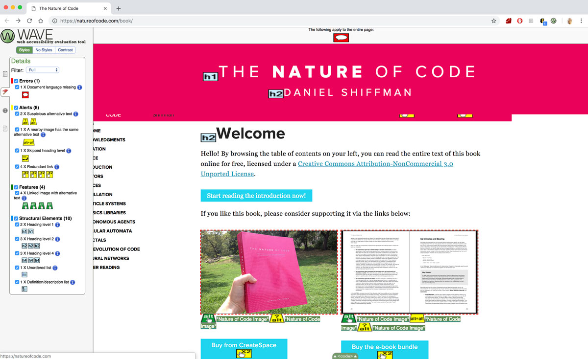
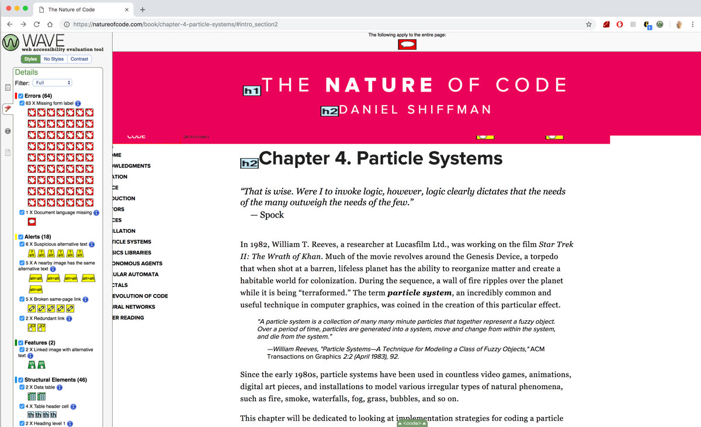
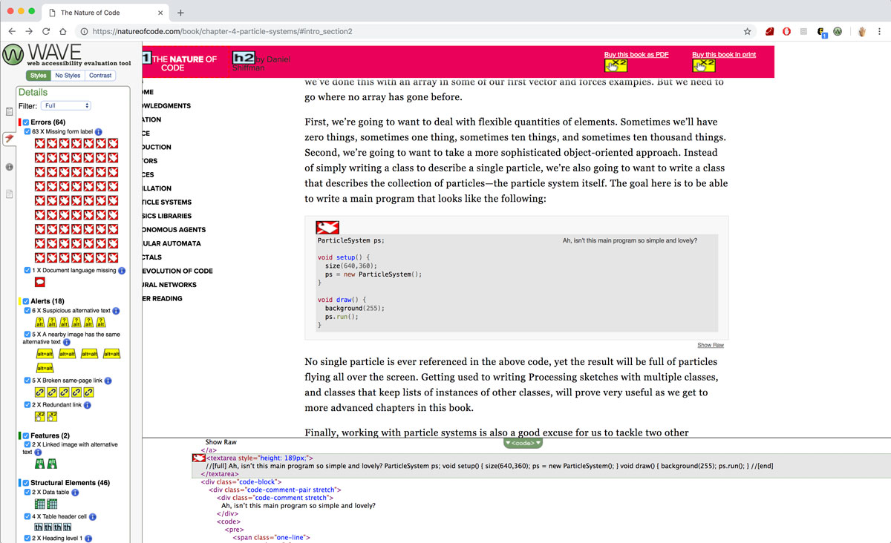
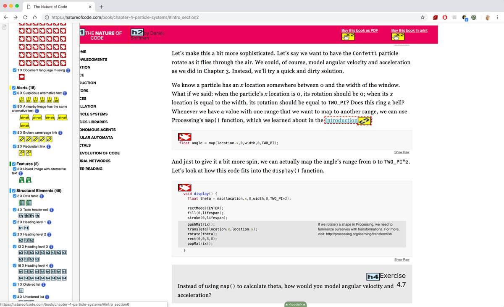
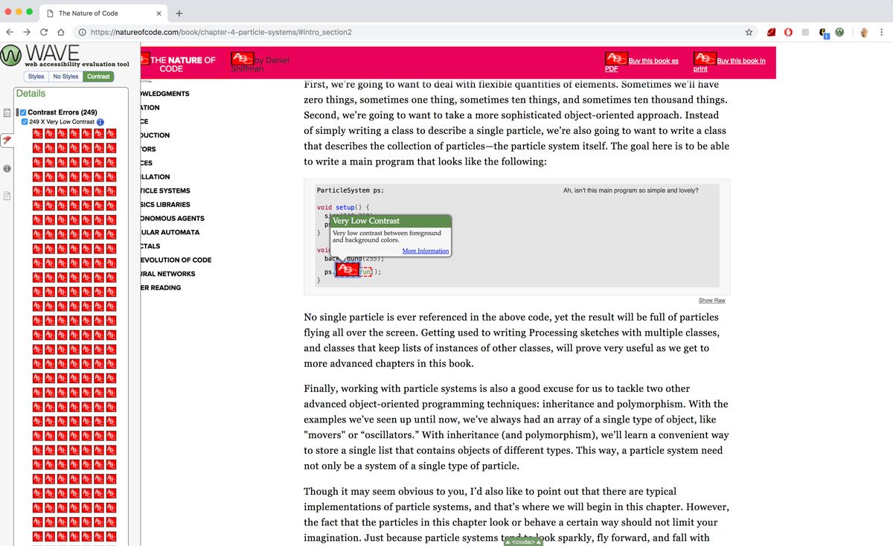

Accessibility Case Study - The Nature of Code Book
Oct 9, 2018
This week, I ran an accessibility "audit" on the The Nature of Code website / book. The main tool that I used to do this was using WAVE web accessibility evaluation tool. When running the WAVE Chrome extension on the homepage of the Nature of Code website, you can already see icons pop up next to HTML elements that mark the errors, warnings and features of the website. For the index.html page of the website, the biggest error is that there is no language meta declaration. There are also some errors, four coming from the fact that there are links in the web page with the same link next to each other. There are also two alt tags that just say "Nature of Code Image", that might not describe the two different photos at all.
I also tried opening one of the chapters of the online book, because I was curious how the code examples would work with accessibility. Immediately I saw that there are a lot more error flags than the book's index page.
When finding the area with one of the 63 error flags of "missing form label", I found that the errors were coming from the fact that the <textarea>s of the code areas were missing labels. A simple addition of a name attribute to tell the viewers that these are code example areas would help differentiate them from the rest of the text.
Here is a case where the accessibility audit is also catching a general error in the website. The link to introduction is a broken link and doesn't lead anywhere and nothing happens upon clicking. This is something that will cause confusion for the general users.
Lastly, I did use the color contrast analyser, but also found out that the WAVE tool also has a built in one, which shows up as contrast errors. Because the code examples have a gray background, most of the color coding for the code examples show up as low contrast flags. For stylistic / contrast errors, I think the solution might be to actually have a button / option for the users to view the website in high contrast, like the setting in p5 editor.
